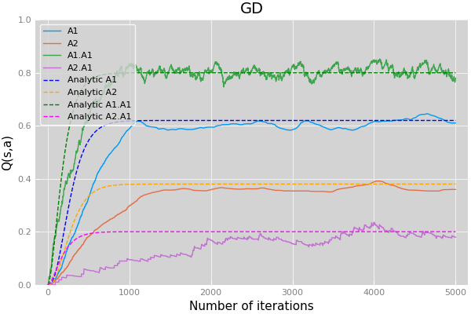
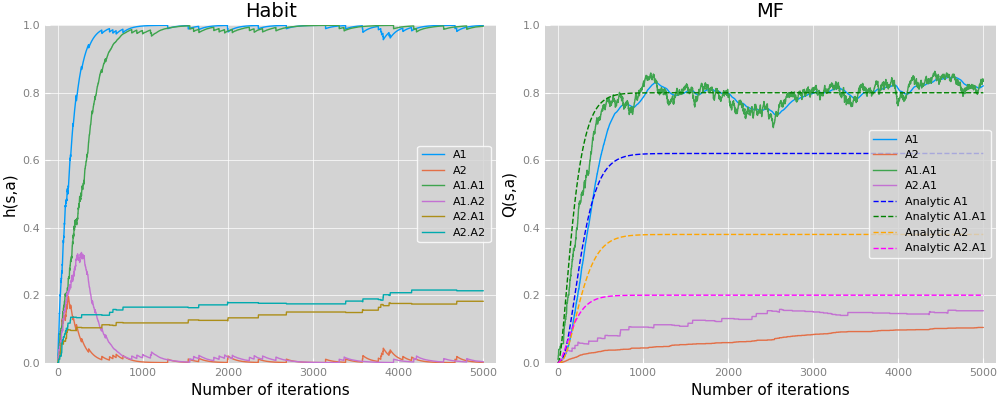
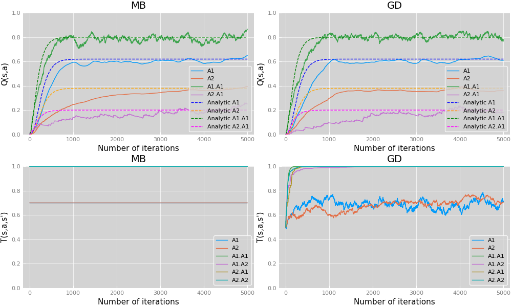
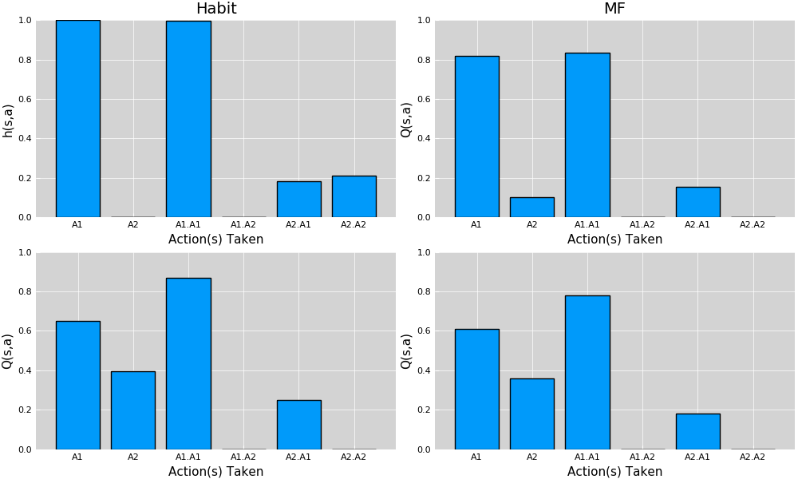

[263]:
using Random, Plots, Pkg
pyplot()
[263]:
Plots.PyPlotBackend()
[264]:
Updating registry at `~/.julia/registries/General`
Updating git-repo `https://github.com/JuliaRegistries/General.git`
[1mFetching: [========================================>] 99.9 %0.0 %=======> ] 17.4 %34.6 %=====================> ] 52.0 %] 69.2 %Fetching: [=============================> ] 70.5 %> ] 87.7 %Fetching: [=======================================> ] 95.2 %Fetching: [=======================================> ] 97.0 %
The following package names could not be resolved:
* virtualenv (not found in project, manifest or registry)
Please specify by known `name=uuid`.
Stacktrace:
[1] pkgerror(::String) at /buildworker/worker/package_linux64/build/usr/share/julia/stdlib/v1.0/Pkg/src/Types.jl:120
[2] #ensure_resolved#42(::Bool, ::Function, ::Pkg.Types.EnvCache, ::Array{Pkg.Types.PackageSpec,1}) at /buildworker/worker/package_linux64/build/usr/share/julia/stdlib/v1.0/Pkg/src/Types.jl:890
[3] #ensure_resolved at ./none:0 [inlined]
[4] #add_or_develop#13(::Symbol, ::Bool, ::Base.Iterators.Pairs{Union{},Union{},Tuple{},NamedTuple{(),Tuple{}}}, ::Function, ::Pkg.Types.Context, ::Array{Pkg.Types.PackageSpec,1}) at /buildworker/worker/package_linux64/build/usr/share/julia/stdlib/v1.0/Pkg/src/API.jl:59
[5] #add_or_develop at ./none:0 [inlined]
[6] #add_or_develop#12 at /buildworker/worker/package_linux64/build/usr/share/julia/stdlib/v1.0/Pkg/src/API.jl:29 [inlined]
[7] #add_or_develop at ./none:0 [inlined]
[8] #add_or_develop#11(::Base.Iterators.Pairs{Symbol,Symbol,Tuple{Symbol},NamedTuple{(:mode,),Tuple{Symbol}}}, ::Function, ::Array{String,1}) at /buildworker/worker/package_linux64/build/usr/share/julia/stdlib/v1.0/Pkg/src/API.jl:28
[9] #add_or_develop at ./none:0 [inlined]
[10] #add_or_develop#10 at /buildworker/worker/package_linux64/build/usr/share/julia/stdlib/v1.0/Pkg/src/API.jl:27 [inlined]
[11] #add_or_develop at ./none:0 [inlined]
[12] #add#18 at /buildworker/worker/package_linux64/build/usr/share/julia/stdlib/v1.0/Pkg/src/API.jl:69 [inlined]
[13] add(::String) at /buildworker/worker/package_linux64/build/usr/share/julia/stdlib/v1.0/Pkg/src/API.jl:69
[14] top-level scope at In[264]:1
[ ]:
from jupyterthemes import get_themes
import jupyterthemes as jt
from jupyterthemes.stylefx import set_nb_theme
# uncomment and execute line to try a new theme
set_nb_theme('onedork')
# set_nb_theme('chesterish')
# set_nb_theme('grade3')
# set_nb_theme('oceans16')
# set_nb_theme('solarizedl')
# set_nb_theme('solarizedd')
# set_nb_theme('monokai')
[2]:
#Hold Q values for each action
mutable struct Actions
A1 ::Float64
A2 ::Float64
end
# Define a simple composite datatype to hold an Q value and the probablistic movement
mutable struct State
Q ::Actions
T ::Union{Actions,Nothing}
R ::Float64
end
# Define the Tree data type for required task
mutable struct DecisionTree
state ::State
A1 ::Union{DecisionTree, Float64}
A2 ::Union{DecisionTree, Float64}
end
[15]:
function buildStepTask(steps::Int;TM::Bool=false,branch=Nothing(),r::Float64=0.0)
if steps == 1
Q = Actions(0.0,0.0)
TM ? T = Actions(0.5,0.5) : T = Nothing()
R = 0.0
Task = DecisionTree(State(Q,T,R),round(0.8-r,digits=2),0.0)
else
Q = Actions(0.0,0.0)
TM ? T = Actions(0.5,0.5) : T = Nothing()
R = 0.0
Task = DecisionTree(State(Q,T,R), buildStepTask(steps-1,TM=TM), buildStepTask(steps-1,TM=TM,r=0.6))
end
return Task
end
function softMax(a, A; θ::Float64=5.0)
p = exp(θ*a)/sum(exp.(θ*A))
return p
end
function rwd(p)
if rand() < p
return 1.0
else
return 0.0
end
end
[15]:
rwd (generic function with 1 method)
[5]:
function habitUpdate(state::String,h::Actions,α::Float64)
if state == "A1"
h.A1 = (1-α)*h.A1 + α
h.A2 = (1-α)*h.A2
elseif state == "A2"
h.A1 = (1-α)*h.A1
h.A2 = (1-α)*h.A2 + α
else
throw(ArgumentError("First argument must be either \"A1\" or \"A2\""))
end
return h
end
function transitionUpdate(state::String,T::Actions,α::Float64;swSt::Bool=false)
if state == "A1"
swSt == false ? T.A1 = (1-α)*T.A1 + α : T.A2 = (1-α)*T.A2
elseif state == "A2"
swSt == false ? T.A2 = (1-α)*T.A2 + α : T.A1 = (1-α)*T.A1
else
throw(ArgumentError("First argument must be either \"A1\" or \"A2\""))
end
return T
end
function switchActn(switch::Bool, α::Float64, Node::DecisionTree, switchNode::DecisionTree, f::Function)
if switch == true
Hold = deepcopy(Node)
Node = deepcopy(switchNode)
Node = f(Node,α=α)
Node = deepcopy(Hold)
else
Node = f(Node,α=α)
end
return Node
end
function modelledQUpdate(Node::DecisionTree, actn::String, r::Float64, α::Float64; leaf::Bool=false)
if leaf == true
if actn == "A1"
Node.state.Q.A1 = (1-α)*Node.state.Q.A1 + α*r
elseif actn == "A2"
Node.state.Q.A2 = (1-α)*Node.state.Q.A2 + α*r
else
throw(ArgumentError("action argument must be either \"A1\" or \"A2\""))
end
else
actn == "A1" ? (p = Node.state.T.A1 ; q = 1-(Node.state.T.A1)) : (p = 1-(Node.state.T.A2) ; q = Node.state.T.A2)
Q_ = p*findmax([Node.A1.state.Q.A2 Node.A1.state.Q.A1])[1] + q*findmax([Node.A2.state.Q.A2 Node.A2.state.Q.A1])[1]
if actn == "A1"
Node.state.Q.A1 = (1-α)*Node.state.Q.A1 + α*Q_
elseif actn == "A2"
Node.state.Q.A2 = (1-α)*Node.state.Q.A2 + α*Q_
else
throw(ArgumentError("action argument must be either \"A1\" or \"A2\""))
end
end
end
function QUpdate(Node::DecisionTree, actn::String, r::Float64, α::Float64; leaf::Bool=false)
if leaf == true
if actn == "A1"
Node.state.Q.A1 = (1-α)*Node.state.Q.A1 + α*r
elseif actn == "A2"
Node.state.Q.A2 = (1-α)*Node.state.Q.A2 + α*r
else
throw(ArgumentError("action argument must be either \"A1\" or \"A2\""))
end
else
if actn == "A1"
Q_ = findmax([Node.A1.state.Q.A1, Node.A1.state.Q.A2])[1]
Node.state.Q.A1 = (1-α)*Node.state.Q.A1 + α*Q_
elseif actn == "A2"
Q_ = findmax([Node.A2.state.Q.A1, Node.A2.state.Q.A2])[1]
Node.state.Q.A2 = (1-α)*Node.state.Q.A2 + α*Q_
else
throw(ArgumentError("action argument must be either \"A1\" or \"A2\""))
end
end
return Node
end
[5]:
QUpdate (generic function with 1 method)
[14]:
function habitCtrl(Node::DecisionTree; α::Float64=0.5)
A = [Node.state.Q.A1, Node.state.Q.A2]
a_idx = findall(x->x==findmax(A)[1], A)[1]
π = softMax(A[a_idx][1], A)
rv = rand()
if typeof(Node.A1) == Float64 || typeof(Node.A2) == Float64
((π >= rv && a_idx == 1) || (π < rv && a_idx == 2)) ? habitUpdate("A1",Node.state.Q,α) : habitUpdate("A2",Node.state.Q,α)
else
if π >= rv && a_idx == 1 || π < rv && a_idx == 2
habitUpdate("A1",Node.state.Q,α)
rand() < 0.7 ? sw=false : sw=true
switchActn(sw,α,Node.A1,Node.A2,habitCtrl)
elseif π >= rv && a_idx == 2 || π < rv && a_idx == 1
habitUpdate("A2",Node.state.Q,α)
rand() < 0.7 ? sw=false : sw=true
switchActn(sw,α,Node.A2,Node.A1,habitCtrl)
else
throw(ArgumentError("softmax evaluation is going wrong"))
end
end
return Node
end
function MFCtrl(Node::DecisionTree; α::Float64=0.5)
A = [Node.state.Q.A1, Node.state.Q.A2]
a_idx = findall(x->x==findmax(A)[1], A)[1]
π = softMax(A[a_idx][1], A)
rv = rand()
if typeof(Node.A1) == Float64 || typeof(Node.A2) == Float64
((π >= rv && a_idx == 1) || (π < rv && a_idx == 2)) ? (r=Node.A1;actn = "A1") : (r=Node.A2;actn = "A2")
QUpdate(Node,actn,rwd(r),α,leaf=true)
else
if (π >= rv && a_idx == 1) || (π < rv && a_idx == 2)
rand() < 0.7 ? sw=false : sw=true
switchActn(sw,α,Node.A1,Node.A2,MFCtrl)
QUpdate(Node,"A1",0.0,α)
elseif (π >= rv && a_idx == 2) || (π < rv && a_idx == 1)
rand() < 0.7 ? sw=false : sw=true
switchActn(sw,α,Node.A2,Node.A1,MFCtrl)
QUpdate(Node,"A2",0.0,α)
else
throw(ArgumentError("softmax evaluation is going wrong"))
end
end
return Node
end
function MBCtrl(Node::DecisionTree; α::Float64=0.5)
A = [Node.state.Q.A1, Node.state.Q.A2]
a_idx = findall(x->x==findmax(A)[1], A)[1]
π = softMax(A[a_idx][1], A)
rv = rand()
if typeof(Node.A1) == Float64 || typeof(Node.A2) == Float64
((π >= rv && a_idx == 1) || (π < rv && a_idx == 2)) ? (r=Node.A1;actn = "A1") : (r=Node.A2;actn = "A2")
modelledQUpdate(Node,actn,rwd(r),α,leaf=true)
else
if (π > rv && a_idx == 1) || (π < rv && a_idx == 2)
actn = "A1"
rand() < 0.7 ? sw=false : sw=true
switchActn(sw,α,Node.A1,Node.A2,MBCtrl)
modelledQUpdate(Node,actn,0.0,α)
elseif (π > rv && a_idx == 2) || (π < rv && a_idx == 1)
actn = "A2"
rand() < 0.7 ? sw=false : sw=true
switchActn(sw,α,Node.A2,Node.A1,MBCtrl)
modelledQUpdate(Node,actn,0.0,α)
end
end
return Node
end
function GDCtrl(Node::DecisionTree; α::Float64=0.5, αₜ::Float64=0.1)
A = [Node.state.Q.A1, Node.state.Q.A2]
a_idx = findall(x->x==findmax(A)[1], A)[1]
π = softMax(A[a_idx][1], A)
rv = rand()
if typeof(Node.A1) == Float64 || typeof(Node.A2) == Float64
((π >= rv && a_idx == 1) || (π < rv && a_idx == 2)) ? (r=Node.A1;actn = "A1") : (r=Node.A2;actn = "A2")
transitionUpdate(actn,Node.state.T,αₜ)
modelledQUpdate(Node,actn,rwd(r),α,leaf=true)
else
if (π >= rv && a_idx == 1) || (π < rv && a_idx == 2)
rand() < 0.7 ? (sw=false;actn = "A1") : (sw=true;actn = "A2")
switchActn(sw,α,Node.A1,Node.A2,GDCtrl)
transitionUpdate(actn,Node.state.T,αₜ,swSt=sw)
modelledQUpdate(Node,actn,0.0,α)
elseif (π >= rv && a_idx == 2) || (π < rv && a_idx == 1)
rand() < 0.7 ? (sw=false;actn = "A2") : (sw=true;actn = "A1")
switchActn(sw,α,Node.A2,Node.A1,GDCtrl)
transitionUpdate(actn,Node.state.T,αₜ,swSt=sw)
modelledQUpdate(Node,actn,0.0,α)
end
end
return Node
end
[14]:
GDCtrl (generic function with 1 method)
[22]:
function runHabit(;habit::DecisionTree=buildStepTask(2),n::Int=1000)
epochHabit = zeros(6,n)
for i=1:n
habit = habitCtrl(habit,α=0.01)
epochHabit[:,i] = [habit.state.Q.A1, habit.state.Q.A2, habit.A1.state.Q.A1, habit.A1.state.Q.A2, habit.A2.state.Q.A1, habit.A2.state.Q.A2]
end
return habit, epochHabit
end
function runMF(;MF::DecisionTree=buildStepTask(2),n::Int=1000)
epochMF = zeros(6,n)
for i=1:n
MF = MFCtrl(MF,α=0.01)
epochMF[:,i] = [MF.state.Q.A1, MF.state.Q.A2, MF.A1.state.Q.A1, MF.A1.state.Q.A2, MF.A2.state.Q.A1, MF.A2.state.Q.A2]
end
return MF, epochMF
end
function runMB(;MB::DecisionTree=buildStepTask(2,TM=true),n::Int=1000, TM::AbstractArray = [0.7 0.7 1.0 1.0 1.0 1.0])
MB.state.T.A1, MB.state.T.A2, MB.A1.state.T.A1, MB.A1.state.T.A2, MB.A2.state.T.A1, MB.A2.state.T.A2 = TM[1], TM[2], TM[3], TM[4], TM[5], TM[6]
epochMB_Q = zeros(6,n)
epochMB_T = zeros(6,n)
for i=1:n
MB = MBCtrl(MB,α=0.01)
epochMB_Q[:,i] = [MB.state.Q.A1, MB.state.Q.A2, MB.A1.state.Q.A1, MB.A1.state.Q.A2, MB.A2.state.Q.A1, MB.A2.state.Q.A2]
epochMB_T[:,i] = [MB.state.T.A1, MB.state.T.A2, MB.A1.state.T.A1, MB.A1.state.T.A2, MB.A2.state.T.A1, MB.A2.state.T.A2]
end
return MB, epochMB_Q, epochMB_T
end
function runGD(;GD::DecisionTree=buildStepTask(2,TM=true),n::Int=1000)
epochGD_Q = zeros(6,n)
epochGD_T = zeros(6,n)
for i=1:n
GD = GDCtrl(GD,α=0.01,αₜ=0.01)
epochGD_Q[:,i] = [GD.state.Q.A1, GD.state.Q.A2, GD.A1.state.Q.A1, GD.A1.state.Q.A2, GD.A2.state.Q.A1, GD.A2.state.Q.A2]
epochGD_T[:,i] = [GD.state.T.A1, GD.state.T.A2, GD.A1.state.T.A1, GD.A1.state.T.A2, GD.A2.state.T.A1, GD.A2.state.T.A2]
end
return GD, epochGD_Q, epochGD_T
end
function runModels()
habit = runHabit()
MF = runMF()
MB = runMB()
GD = runGD()
return MF, MB, GD
end
[22]:
runModels (generic function with 1 method)
[251]:
function plotSim(f::Function;N::Int=1000,α::Float64=0.01,ana::Bool=true)
Model = f(n=N)
pltT = Nothing()
plt2 = Nothing()
Qv = "$f"[4] == 'H' ? "h" : "Q"
anaQ = zeros(8,N)
for i=1:N-1
anaQ[1,i+1] = (1-α)*anaQ[1,i] + α*(0.7*anaQ[3,i]+0.3*anaQ[4,i])
anaQ[2,i+1] = (1-α)*anaQ[2,i] + α*(0.3*anaQ[3,i]+0.7*anaQ[4,i])
anaQ[3,i+1] = (1-α)*anaQ[3,i] + α*(findmax([anaQ[5,i] anaQ[6,i]])[1])
anaQ[4,i+1] = (1-α)*anaQ[4,i] + α*(findmax([anaQ[7,i] anaQ[8,i]])[1])
anaQ[5,i+1] = (1-α)*anaQ[5,i] + α*Model[1].A1.A1
anaQ[6,i+1] = (1-α)*anaQ[6,i] + α*Model[1].A1.A2
anaQ[7,i+1] = (1-α)*anaQ[7,i] + α*Model[1].A2.A1
anaQ[8,i+1] = (1-α)*anaQ[8,i] + α*Model[1].A2.A2
end
if Model[1].state.T != nothing
pltT = plot(Model[3][1,:],label="A1",ylims = (0, 1))
plot!(Model[3][2,:],label="A2")
plot!(Model[3][3,:],label="A1.A1")
plot!(Model[3][4,:],label="A1.A2")
plot!(Model[3][5,:],label="A2.A1")
plot!(Model[3][6,:],label="A2.A2")
title!("$f"[4:end])
xaxis!("Number of iterations")
yaxis!("T(s,a,s')")
plt = plot(Model[2][1,:],label="A1",ylims = (0, 1))
plot!(Model[2][2,:],label="A2")
plot!(Model[2][3,:],label="A1.A1")
#plot!(Model[2][4,:],label="A1.A2")
plot!(Model[2][5,:],label="A2.A1")
#plot!(Model[2][6,:],label="A2.A2")
if ana == true
plot!(anaQ[1,:],label="Analytic A1",color="blue",linestyle=:dash)
plot!(anaQ[2,:],label="Analytic A2",color="orange",linestyle=:dash)
plot!(anaQ[3,:],label="Analytic A1.A1",color="green",linestyle=:dash)
plot!(anaQ[4,:],label="Analytic A2.A1",color="magenta",linestyle=:dash)
end
title!("$f"[4:end])
xaxis!("Number of iterations")
yaxis!("$Qv(s,a)")
plt1 = bar([Model[1].state.Q.A1, Model[1].state.Q.A2, Model[1].A1.state.Q.A1, Model[1].A1.state.Q.A2, Model[1].A2.state.Q.A1, Model[1].A2.state.Q.A2],legend=false,ylims = (0, 1));
xaxis!("Action(s) Taken")
xticks!((1:6),["A1", "A2", "A1.A1", "A1.A2", "A2.A1", "A2.A2"])
yaxis!("$Qv(s,a)")
plt2 = bar([Model[1].state.T.A1, Model[1].state.T.A2, Model[1].A1.state.T.A1, Model[1].A1.state.T.A2, Model[1].A2.state.T.A1, Model[1].A2.state.T.A2],legend=false,ylims = (0, 1));
title!("$f"[4:end])
xaxis!("Action(s) Taken")
xticks!((1:6),["A1", "A2", "A1.A1", "A1.A2", "A2.A1", "A2.A2"])
yaxis!("T(s,a,s')")
else
plt = plot(Model[2][1,:],label="A1",ylims = (0, 1))
plot!(Model[2][2,:],label="A2")
if ana == true
plot!(Model[2][3,:],label="A1.A1")
plot!(Model[2][5,:],label="A2.A1")
plot!(anaQ[1,:],label="Analytic A1",color="blue",linestyle=:dash)
plot!(anaQ[2,:],label="Analytic A2",color="orange",linestyle=:dash)
plot!(anaQ[3,:],label="Analytic A1.A1",color="green",linestyle=:dash)
plot!(anaQ[4,:],label="Analytic A2.A1",color="magenta",linestyle=:dash)
else
plot!(Model[2][3,:],label="A1.A1")
plot!(Model[2][4,:],label="A1.A2")
plot!(Model[2][5,:],label="A2.A1")
plot!(Model[2][6,:],label="A2.A2")
end
title!("$f"[4:end])
xaxis!("Number of iterations")
yaxis!("$Qv(s,a)")
plt1 = bar([Model[1].state.Q.A1, Model[1].state.Q.A2, Model[1].A1.state.Q.A1, Model[1].A1.state.Q.A2, Model[1].A2.state.Q.A1, Model[1].A2.state.Q.A2],legend=false,ylims = (0, 1));
title!("$f"[4:end])
xaxis!("Action(s) Taken")
xticks!((1:6),["A1", "A2", "A1.A1", "A1.A2", "A2.A1", "A2.A2"])
yaxis!("$Qv(s,a)")
end
return plt,pltT,plt1,plt2
end
[251]:
plotSim (generic function with 1 method)
[252]:
theme(:ggplot2)
[253]:
habitSimResults = plotSim(runHabit,N=5000,ana=false)
MFSimResults = plotSim(runMF,N=5000)
MBSimResults = plotSim(runMB,N=5000)
GDSimResults = plotSim(runGD,N=5000)
plth = habitSimResults[1]
pltf = MFSimResults[1]
pltb = MBSimResults[1]
pltg = GDSimResults[1]
[253]:

Reinforcement Learning Models for the Two Step Task
Richard Fox
Overview
Two Step Task
Two Step Task
Existing Models
Existing Models
Model-Free / Q-Learning
Model Based
Habitual
Data Fitting
Data Fitting
Data Set
Maximum Likelihood Estimation
Proposed Models
Proposed Models
Value Free
Hierarchical RL
Two Step Task
Model-Free / Q-Learning
\[Q(s, a) \leftarrow Q(s, a)+\alpha\left(r(s)+\gamma \max _{a^{\prime}} Q\left(s^{\prime}, a^{\prime}\right)-Q(s, a)\right)\]
Habitual
\[\begin{split}h_{\tau+1}\left(s_{\tau}, a\right)=\left\{\begin{array}{ll}\left(1-\alpha_{H}\right){h_{\tau}\left(s_{\tau}, a\right)+\alpha_{H}} & { ; \quad a=a_{\tau}} \\ \left(1-\alpha_{H}\right){h_{\tau}\left(s_{\tau}, a\right)} & { ; \quad a \neq a_{\tau}}\end{array}\right.\end{split}\]
Model Based
\[Q(s, a) \leftarrow Q(s, a)+\alpha\left(r(s)+\gamma \sum_{s^{\prime}}T\left(s_{\tau}, a_{\tau}, s^{\prime}\right)\max_{a^{\prime}} Q\left(s^{\prime}, a^{\prime}\right)-Q(s, a)\right)\]
Transition Model
\[\begin{split}T_{\tau+1}\left(s_{\tau}, a_{\tau}, s^{\prime}\right)=\left\{\begin{array}{ll}\left(1-\alpha_{T}\right){T_{\tau}\left(s_{\tau}, a_{\tau}, s^{\prime}\right)+\alpha_{T}} & {;} & {\mathrm{s}^{\prime}=s_{\tau+1}} \\ \left(1-\alpha_{T}\right){T_{\tau}\left(s_{\tau}, a_{\tau}, s^{\prime}\right)} & { ;} & {\mathrm{s}^{\prime} \neq s_{\tau+1}}\end{array}\right.\end{split}\]
[ ]:
Q Value Time Series¶
[256]:
plot(habitSimResults[1], MFSimResults[1],size=(1000,400),legend=:right,legendfontsize=8)
[256]:

[257]:
plot(MBSimResults[1], GDSimResults[1],MBSimResults[2],GDSimResults[2],size=(1000,600),legend=:bottomright,legendfontsize=8)
[257]:

[255]:
plot(habitSimResults[3], MFSimResults[3],MBSimResults[3],GDSimResults[3],size=(1000,600),foreground_color_text=:black)
[255]:

[ ]: